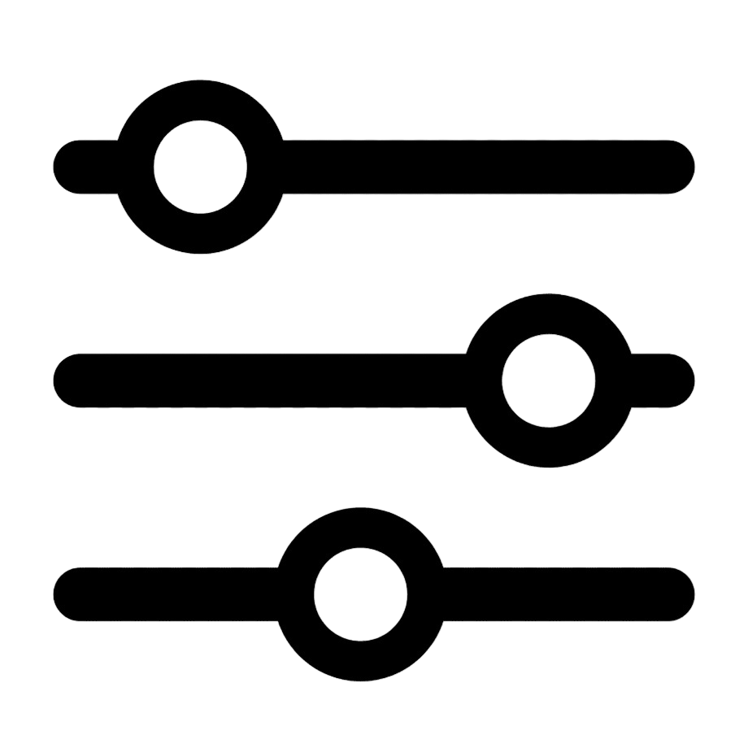
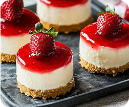
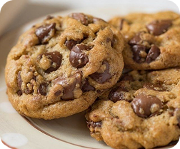
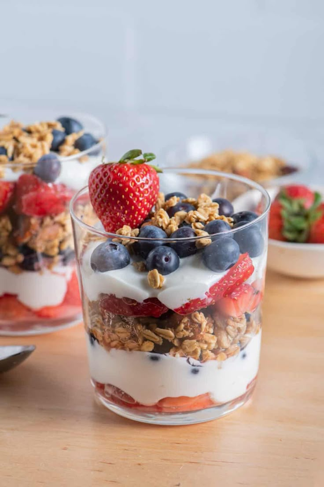
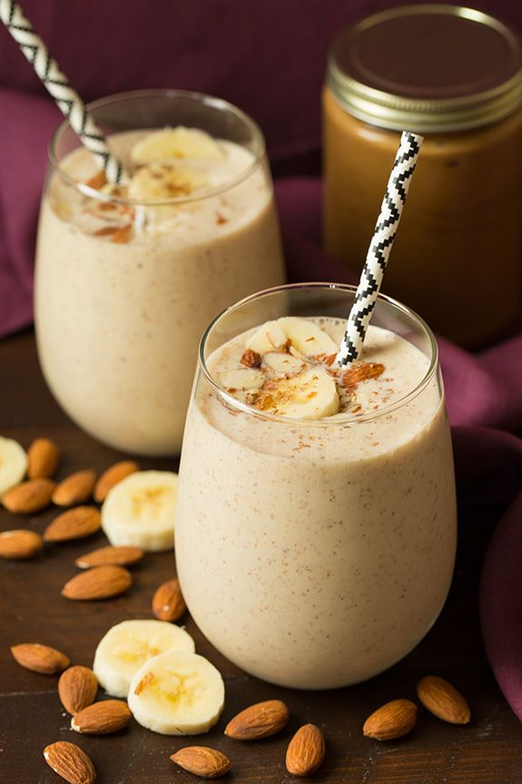

EasyMeal
MI DIARIO DE COCINA


Fácil
CHEESECAKE DE FRESA
NOTA: Usar menos azúcar en la base y añadir ralladura de limón al relleno.

Fácil
GALLETAS CON CHISPAS
NOTA: Probar con chispas oscuras y un poco de sal marina encima.

Fácil
YOGURT CON GRANOLA
NOTA: Tostar la granola con canela para más sabor y textura.

Fácil
BATIDO DE PLATANO
NOTA: Agregar hielo y unas gotas de limón para hacerlo más fresco.